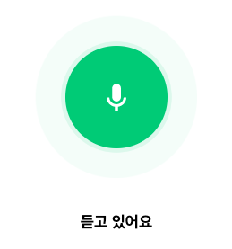
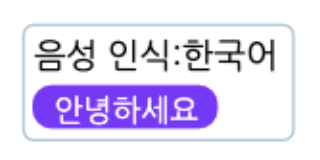

AI 블록 > 음성 인식
네이버가 개발한 인공지능 음성 인식 엔진 ‘클로바 스피치’를 활용해서, 마이크로 입력되는 음성을 인식해 문자로 바꿔 주는 블록의 모음입니다.
- 음성 인식 블록은 인터넷 익스플로러, 사파리에서는 동작하지 않습니다.
(안정적인 동작을 위해 크롬을 사용해주세요.) - 음성 인식 블록은 마이크 연결이 필요한 블록입니다. 데스크탑의 경우 마이크(혹은 마이크가 포함된 이어폰)을 연결해주세요.
- 마이크를 연결했는데 블록이 동작하지 않거나, 음성이 제대로 입력되지 않는 경우 브라우저 설정을 변경해주세요.
(크롬의 경우, 주소 표시줄 오른쪽의 카메라 아이콘을 클릭하거나 ‘설정 > 개인정보 및 보안 > 사이트 설정 > 마이크’ 에서 엔트리 사이트의 마이크 사용을 허용해 주세요.)
※ 마이크를 통해 입력되는 소리는 절대로 서버에 저장되거나 외부로 공유되지 않습니다.
1. 마이크가 연결되었는가?
기기에 마이크가 연결되어 있다면 참으로, 아니라면 거짓으로 판단하는 블록입니다.
2. 마이크 소리 크기
마이크로 입력된 소리의 크기를 가져오는 값 블록입니다.
3. [한국어] 음성 인식하기
선택한 언어로 음성 인식을 시작합니다.
블록이 동작하면 실행 화면에 아래와 같이 음성 인식 애니메이션이 나타납니다.
위 애니메이션이 표시되고 2초 이상 마이크에 음성이 입력되지 않았다면 인식을 종료합니다.
목록 상자( )를 클릭해서 인식할 언어를 선택할 수 있어요.
)를 클릭해서 인식할 언어를 선택할 수 있어요.
- 인식 가능 언어
한국어,영어,일본어
4. (10) 초 동안 [한국어] 음성 인식하기
선택한 언어로 입력한 시간( )동안 음성을 인식합니다.
)동안 음성을 인식합니다.
블록이 동작하면 실행 화면에 아래와 같이 음성 인식 애니메이션이 나타납니다.
위 애니메이션이 표시되고 입력한 시간이 지나면 인식을 종료합니다.
목록 상자( )를 클릭해서 인식할 언어를 선택할 수 있어요.
)를 클릭해서 인식할 언어를 선택할 수 있어요.
- 인식 가능 언어
한국어,영어,일본어
5. 인식한 음성 [보이기]
음성 인식 창을 실행 화면에서 나타내거나 숨깁니다.
위와 같이 음성 인식 창에서는 인식할 언어와 직전에 인식된 음성을 문자로 바꾼 값을 확인할 수 있습니다.
목록 상자( )를 클릭하면 음성 인식 창을 나타낼지 숨길지 고를 수 있어요.
)를 클릭하면 음성 인식 창을 나타낼지 숨길지 고를 수 있어요.
6. 음성을 문자로 바꾼 값
음성 인식 창에서 인식한 목소리를 문자로 바꾸는 값 블록입니다.
목소리를 입력하지 않았거나, 음성 인식 도중에 오류가 발생한 경우에는 0 을 가져와요.
뭐라고 말했는지 엔트리가 잘 알아들었나요?